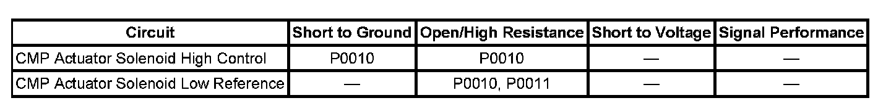
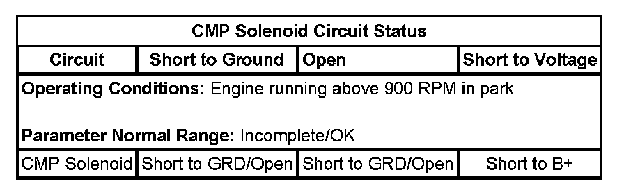
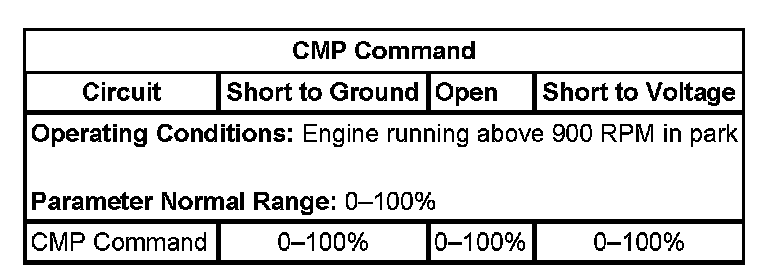
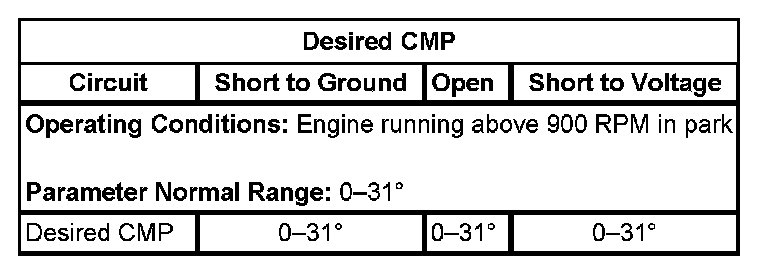
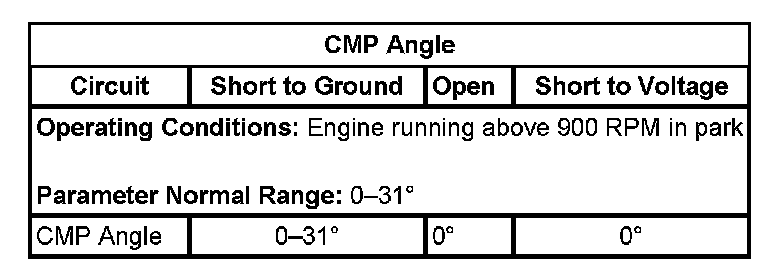
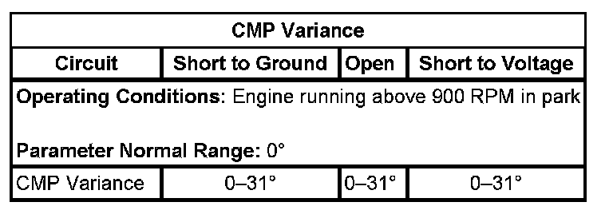

P0010
DTC P0010 or P0011
DIAGNOSTIC INSTRUCTIONS
- Perform the Diagnostic System Check - Vehicle prior to using this diagnostic procedure. Initial Inspection and Diagnostic Overview
- Strategy Based Diagnosis
- Diagnostic Procedure Instructions
DTC DESCRIPTORS
DTC P0010
Camshaft Position (CMP) Actuator Solenoid Control Circuit
DTC P0011
Camshaft Position (CMP) System Performance

DIAGNOSTIC FAULT INFORMATION
TYPICAL SCAN TOOL DATA
CMP Solenoid Circuit Status:

CMP Command:

Desired CMP:

CMP Angle:

CMP Variance:

CIRCUIT/SYSTEM DESCRIPTION
The camshaft position (CMP) actuator solenoid is controlled by the engine control module (ECM). The ECM sends a 12 volt, pulse width modulated (PWM) signal to the CMP actuator solenoid. The CMP actuator solenoid positions the CMP actuator spool valve to control the amount of pressurized engine oil, which enters into the CMP actuator assembly. A low reference wire circuit between the CMP actuator solenoid and the ECM completes the electrical circuit. The frequency of the pulse width modulated signal is fixed at 150 Hz. The ECM can only command the CMP actuator to retard the valve timing from the camshaft park position, or advance the valve timing back to the park position. The total range of valve timing command is 31 degrees as measured at the camshaft, or 62 degrees as measured at the crankshaft.
CONDITIONS FOR RUNNING THE DTC
P0010
- The ignition switch is in the crank or run position.
- The system voltage is between 9-18 volts.
- The CMP actuator is command ON.
- DTC P0010 runs continuously when the above conditions are met.
P0011
- DTC P0010, P0016, P0335, P0336, P0340, or P0341 is not set.
- The engine is running.
- The system voltage is between 9-18 volts.
- The CMP actuator is enabled.
- The power take off (PTO) is not active.
- The rate of change in the camshaft position is less than 7.5 degrees for 3.35 seconds.
CONDITIONS FOR SETTING THE DTC
P0010
The ECM detects that the state of the high side driver and the state of the CMP solenoid control circuit does not match. The ECM will detect an open, high resistance, short to ground, or a short to voltage on the CMP solenoid control circuit, or an open on the low reference circuit, if the condition is present for more than 6 seconds.
P0011
- The ECM detects resistance greater than 2 ohms on the low reference circuit.
- The ECM detects that the CMP Angle position is more than 8 degrees difference than the Desired CMP position.
ACTION TAKEN WHEN THE DTC SETS
- DTC P0010 and P0011 are Type B DTCs.
- The CMP actuator is commanded to the park position.
CONDITIONS FOR CLEARING THE DTC
DTC P0010 and P0011 are Type B DTCs.
DIAGNOSTIC AIDS
This test procedure requires that the vehicle battery has passed a load test and is completely charged. Refer to Battery Inspection/Test. Battery Inspection/Test
CIRCUIT/SYSTEM VERIFICATION
1. Observe the engine oil level. The engine oil level should be within the operating range on the oil indicator stick.
2. Start the engine. Allow the engine to reach normal operating temperature.
3. Monitor the engine oil pressure parameter value with the scan tool. The engine oil pressure must be at or above the minimum hot oil pressure values. Refer to Engine Mechanical Specifications (RPO LY2 VIN C) Engine Mechanical Specifications (RPO LMG VIN 0) Engine Mechanical Specifications (RPO LY5 VIN J) Engine Mechanical Specifications (RPO LC9 VIN 3) Engine Mechanical Specifications (RPO L76 VIN Y) Engine Mechanical Specifications (RPO LY6 VIN K) Engine Mechanical Specifications (RPO L92 VIN 8).
4. Using the output control function of the scan tool, command the CMP actuator solenoid to 25 degrees. The CMP Desired parameter value should match the CMP Angle parameter value.
5. Observe the CMP Variance value, on the scan tool. The CMP Variance value will increment for several seconds, until the CMP Angle value matches the Desired CMP value. The CMP Variance value should then return to 0 degrees.
- If the vehicle passes the Circuit/System Verification, then operate the vehicle within the conditions for running the DTC. You may also operate the vehicle within the conditions that are captured in the Freeze Frame/Failure Records Data List.
CIRCUIT/SYSTEM TESTING
IMPORTANT: You must perform the Circuit/System Verification before proceeding with Circuit/System Testing.
P0010
1. Ignition OFF, disconnect C112.
2. Test for less than 1 ohm of resistance between the low reference circuit terminal E, ECM side, and ground.
- If the greater than 1 ohm, test the low reference circuit for an open/high resistance. If the circuit tests normal, replace the ECM.
3. Connect a test lamp between the CMP actuator solenoid control circuit terminal D, ECM side, and the low reference circuit terminal E.
4. Ignition ON, command the CMP Actuator solenoid from 0-25 degrees. The test lamp should turn ON and OFF when changing between commanded states.
- If the test lamp is always ON, test the solenoid control circuit for a short to voltage. If the circuit tests normal, replace the ECM.
- If the test lamp is always OFF, test the solenoid control circuit for an open/high resistance or a short to ground. If the circuit tests normal, replaced the ECM.
5. Remove the water pump from the engine.
6. Inspect and test the remaining CMP solenoid wire harness from C112 to the solenoid for an open/high resistance, or a short to ground.
- If the circuits test normal, replace the CMP actuator solenoid.
P0011
1. IMPORTANT: Incorrect engine oil viscosity, aftermarket engine oil additives, or engine oil that overdue for changing, can greatly affect the performance of the camshaft actuator.
Ignition OFF, disconnect C112.
2. Test for less than 1 ohm of resistance between the low reference circuit ECM side, terminal E and ground.
- If greater than 1 ohm, test the low reference circuit for an open/high resistance. If the circuit tests normal, replace the ECM.
3. Remove the water pump from the engine.
4. Inspect and test the remaining wire harness from C112 to the CMP solenoid for an open/high resistance, or a short to ground.
- If the circuit tests normal, perform the component testing for the CMP actuator solenoid.
- If the CMP solenoid and the circuit test normal, then refer to Camshaft Position Actuator Magnet Cleaning and Inspection and Camshaft Position Actuator Solenoid Valve Inspection (On-Vehicle) Camshaft Position Actuator Solenoid Valve Inspection (Off-Vehicle).
COMPONENT TESTING
IMPORTANT: You must perform the Circuit/System Testing before proceeding with Component Testing.
Static Test
Test for 5.9-6.9 ohms of resistance at 20°C, or 68°F between the solenoid control terminal 2 and the low reference terminal 1 at the CMP actuator solenoid.
- If the resistance is not with in the specified range, then replace the CMP actuator solenoid.
Dynamic Test
IMPORTANT: Do not allow electrical current to flow through the CMP actuator solenoid for more than 1-2 seconds, or damage to the solenoid may occur.
Point the CMP actuator solenoid vertically, towards a shop towel. Connect one end of a fused jumper wire to the CMP actuator solenoid control circuit terminal 2 and 12 volts. Connect a second jumper wire to the low reference circuit terminal 1 and momentarily connect to ground. The CMP actuator solenoid should immediately extend.
- If the CMP actuator solenoid pintle does not extend, then replace the CMP actuator solenoid.
REPAIR INSTRUCTIONS
Perform the Diagnostic Repair Verification after completing the diagnostic procedure.
- Control Module References for ECM replacement, setup, and programming.
- Camshaft Position Actuator Magnet Replacement. Verification Tests
REPAIR VERIFICATION
IMPORTANT: Always perform the Diagnostic Repair Verification after completing the diagnostic procedure. Verification Tests